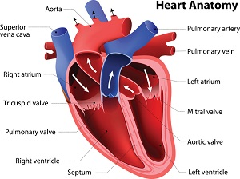

Love

Description
Love is something that everyone is searching for. Something that is so elusive
yet primitive in the way that we yearn for it. The way that we believe we can
capture its essence for ourselves.
But this is not the case. There is not some patented way to become in love.
Some magical solution to all of the worlds problems.
That is until now. "Love strong" is our new patent pending recipe that aims to
show every young person out there that love is as simple as these 3 easy
steps.
Ingredients
Steps
- Approach the other person with careless but calculated charisma.
-
Foolishly trip over a crack- "O sorry I didn't mean to do that" you say- but
you most certainly did.
-
Finally, leave like nothing ever happened. Leave the mystery in the air but
secretely plant an object of your belonging. Something to keep the mystery
alive for the other person. Something to connect you two. Something that
they will look for. Something so that they can find their true love.